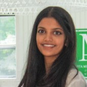

PhD in Economics — Booth School of Business, University of Chicago
Sept 2026 – present

PhD Student in Economics
Booth School of Business · University of Chicago
About
I am a first-year PhD student in Economics at the Booth School of Business, University of Chicago. My research spans labor economics, causal inference, and the economics of information. I am particularly interested in high-dimensional causal inference methods, network externalities, and how information asymmetries shape economic outcomes.
Prior to Booth, I earned an honors dual degree in Economics and Molecular Genetics & Genomics from Michigan State University, with minors in Mathematics and Law & Public Policy. I have also conducted biomedical research on sex-linked autoimmune disease and mathematical research in graph theory. I am an NSF Graduate Research Fellow and a Doctoral Centennial Fellow at Booth.
Research papers
The Impact of Abortion Bans After Dobbs v. Jackson on Teen Birthrates and Education Attainment
Working paper
Using Wooldridge's new ETWFE specification to address heterogeneous pre-trends, we find statistically significant evidence that abortion bans increase teen birth rates in the United States. Concurrent COVID-19 policies complicate the analysis of effects on educational attainment, requiring further research to isolate causal effects.
Bayesian Persuasion and More: Applying Prospect Theory to Information Signaling Games
Symposium poster
This research investigates how incorporating Kahneman and Tversky's prospect theory into the Kamenica-Gentzkow Bayesian Persuasion model affects sender-receiver signaling games. We demonstrate that probability distortion provides a theoretical explanation for why Bayesian Persuasion rarely occurs in real-world environments, as distorted probability perceptions can fundamentally alter receiver decision-making.
TNFα Exposure in XIST and RPII KD Lupus-Prone Mice Stimulates Sex-Bias
Manuscript · forthcoming 2025 · Second author
We investigate the role of XIST RNA in inflammation and lupus pathogenesis, as sexual dimorphism in immune regulation results in women suffering 8 out of 9 lupus cases. Through qPCR analysis and immunohistochemistry, we map an epigenetic relationship between XIST RNA and altered inflammatory protein expression that may explain sex-based differences in autoimmune disease incidence.
Nesterov's Implicit Regularization Under Stochastic Gradient Descent
Working paper
We study Nesterov's Accelerated Gradient (NAG), finding that it exhibits stronger implicit regularization than standard Gradient Descent and Polyak's Momentum. Higher momentum parameters in NAG reduce variation and enhance test accuracy by inducing a differentiable trajectory with a more powerful implicit regularizer.
Mentoring Matters: Ambassador Quality and New Hire Productivity in Fulfillment Centers
Working paper · Amazon
Amazon Confidential.
Amazon City: Best Economics Paper at Amazon Consumer Science Summit
Internal manuscript · Last author
Amazon Confidential.
Education
Economics & Molecular Genetics and Genomics · Minors in Mathematics and Law & Public Policy
GRE 170Q / 166V · Dean's List every semester · MSU Econ Scholars Program
Research experience
Seattle, WA
Research with Dr. Nichols, Dr. Jahedi, Prof. Imbens, and Prof. Card on network externalities, labor productivity, worker health, consumer spending, and high-dimensional causal inference methods.
Second author on a paper examining sex-linked lupus bias in XIST and RPII KD fetal mouse keratinocytes. 2025 publication.
PURI grant-funded research incorporating Kahneman and Tversky prospect theory into a model of symmetric information with a sender-specific signal for a receiver taking a non-contractible action.
Research on graph theory and properties of Cayley graphs in abstract algebra and number theory.
NSP grant-funded analysis of hypothalamic cell deviation, drug dependency, cPTSD, and reward-seeking behavior.
Protein assays and genetic analysis around chemokines associated with HIV and cervical cancer in human cell lines.
Teaching and mentorship
East Lansing, MI
Mentor for first-generation and diverse social science students — helping them engage in research, find fields and mentors in which they're interested, communicate with potential mentors, and secure a research position.
East Lansing, MI
Undergraduate tutoring of introductory theoretical statistics and probability.
Skills
Coding
Python · R · SQL · Spark · STATA
Tools
LaTeX · Jupyter · VSCode · Git · GitHub · Markdown
Languages
Hindi, Marwari, Gujarati (fluent) · Latin, Spanish (proficient)
Coursework
Behavioral Economics · Advanced Econometrics · Real Analysis · Theory of Probability & Statistics
Leadership
Contact
I'm happy to hear from prospective collaborators, students, and researchers. The best way to reach me is by email.